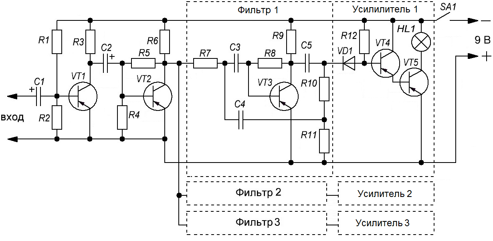

Цветомузыкальная установка на лампах накаливания (вариант 3)
Цветомузыкальное устройство (рис. 1) состоит из трех основных блоков:
- предварительного усилителя на транзисторах VТ1 и VТ2, необходимого для усиления звуковой частоты,
- трех фильтров на транзисторе VТЗ
- трех усилителей мощности, собранных по аналогичным составным схемам.
Нагрузками усилителей служат микролампочки на 2,5 В, 75 мА.

Таблица 1
| Обозначение | Тип | Номинал | Количество | Примечание |
|---|---|---|---|---|
| C1 | Конденсатор электролитический | 5 мкФ - 10 В | 1 | |
| C2 | Конденсатор электролитический | 10 мкФ - 10 В | 1 | |
| C3-C5 | Конденсатор | см. табл. 2 | 3 | |
| HL1 | Лампа накаливания | 2,5 В / 75 мА | 1 | |
| R1 | Резистор | 620 кОм - 0,125 Вт | 1 | |
| R2, R4 | Резистор | 10 кОм - 0,125 Вт | 2 | |
| R3 | Резистор | 7,5 кОм - 0,125 Вт | 1 | |
| R5 | Резистор | 470 кОм - 0,125 Вт | 1 | |
| R6 | Резистор | 5,1 кОм - 0,125 Вт | 1 | |
| R7 | Резистор | 4,7 кОм - 0,125 Вт | 1 | |
| R8 | Резистор | 220 кОм - 0,125 Вт | 1 | |
| R9 | Резистор | 3,3 кОм - 0,125 Вт | 1 | |
| R10 | Резистор | 2 кОм - 0,125 Вт | 1 | |
| R11 | Резистор | 2,2 кОм - 0,125 Вт | 1 | |
| R12 | Резистор | 62 кОм - 0,125 Вт | 1 | |
| VТ1 | Биполярный транзистор | МП40 | 1 | |
| VТ2-VТ5 | Биполярный транзистор | МП16 | 4 | |
| VD1 | Диод | Д220 | 1 |
В зависимости от пропускаемых частот (выбранного числа каналов) в фильтре каждого канала емкости конденсаторов C3 - С5 имеют номиналы, указанные в табл. 2. Диод VD1 необходим для выделения на входе усилителя мощности отрицательной составляющей с тем, чтобы транзистор VТ4 был всегда открыт.
Таблица 2
| 3 канала | 4 канала | |||
|---|---|---|---|---|
| Цвет | С, мкФ | Цвет | С, мкФ | |
| Красный | 0,1 | Красный | 0,1 | |
| Зеленый | 0,03 | Желтый | 0,047 | |
| Синий | 0,01 | Зеленый | 0,022 | |
| Синий | 0,01 | |||
Для включения и выключения питания устройства служит клавишный выключатель SA1.
Транзисторы и диоды, за исключением транзистора VТ5, могут быть использованы любые низкочастотные.
Настройка цветомузыкальной установки сводится к подбору оптимальных режимов работы каскадов и полос пропускания фильтров. Резистором R1 устанавливают ток коллектора транзистора VТ1, равный 0,3 мА. Резистором R5 подбирают коллекторный ток транзистора VТ2, равный 0,5—0,8 мА. Затем устанавливают коэффициент усиления фильтров одинаковым для всех трех каналов. Полосу пропускания фильтров подбирают при помощи резисторов R10 и R11, вместо которых на время настройки ставятся подстроечные резисторы. В режиме отсутствия входного сигнала подбирают резистор R12 таким образом, чтобы лампа HL1 была на пороге загорания.
Необходимо отметить сравнительно небольшой потребляемый ток (50—60 мА при напряжении 9 В), который позволяет успешно использовать описанное устройство в переносных устройствах.
Источники:
cxem.net - Цветомузыкальное малогабаритное устройство
В помощь радиолюбителю, №58, с.27 -31